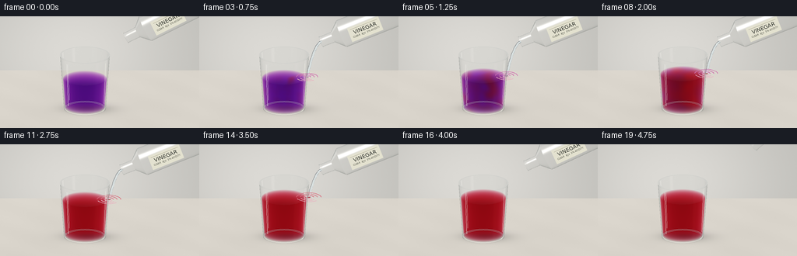
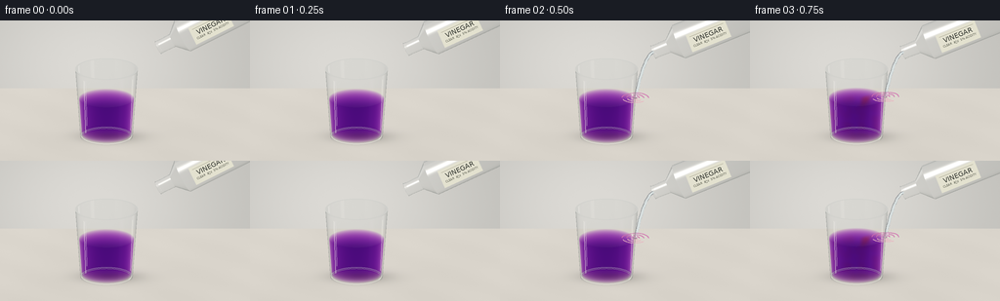

CODING AGENTS AS PIXEL WORLD MODELS
traex/GPT-6.1-Sol · phygen_146
点击播放 · 原生 RGB 像素
逐轮保存的候选
回放视频、检查图与代码变化。
每份候选均可单独播放。实际图片检查记录在下方工具轨迹中。
候选 01播放与检查图
点击播放 · 原生 RGB 像素

展开代码变化
--- 上一保存版本
+++ 本次保存版本
@@ -0,0 +1,314 @@
+"""Procedural RGB rendering of an acid / litmus pouring experiment.
+Only numpy, Pillow, analytic ray geometry and hand-built optical shading.
+"""
+from pathlib import Path
+import math
+import numpy as np
+from PIL import Image, ImageDraw, ImageFont, ImageFilter
+from artifact_io import save
+
+ROOT = Path(__file__).resolve().parent
+W,H,S=256,144,3
+WW,HH=W*S,H*S
+Y,X=np.mgrid[0:HH,0:WW].astype(np.float32)
+xx=(X+.5)/S; yy=(Y+.5)/S
+E=math.radians(20)
+D=np.array([0,math.cos(E),-math.sin(E)],np.float32)
+UP=np.array([0,math.sin(E),math.cos(E)],np.float32)
+RIGHT=np.array([1,0,0],np.float32)
+SCALE=.0185
+O=(xx[...,None]-128)*SCALE*RIGHT+(72-yy[...,None])*SCALE*UP+np.array([0,0,.97],np.float32)-D*7
+rng=np.random.default_rng(18)
+noise=rng.normal(0,.32,(HH,WW,1)).astype(np.float32)
+
+
+def smooth(a,b,x):
+ q=np.clip((x-a)/(b-a),0,1)
+ return q*q*(3-2*q)
+
+
+def project(p):
+ p=np.asarray(p)-np.array([0,0,.97])
+ return ((128+p[...,0]/SCALE)*S,(72-(p[...,1]*math.sin(E)+p[...,2]*math.cos(E))/SCALE)*S)
+
+
+def background():
+ # A softly lit, very pale stone worktop and a seamless out-of-focus wall.
+ floor_t=-O[...,2]/D[2]
+ p=O+floor_t[...,None]*D
+ wall_t=(2.8-O[...,1])/D[1]
+ wall=O+wall_t[...,None]*D
+ isfloor=(floor_t<wall_t)
+ glow=np.exp(-((xx-95)/135)**2-((yy-45)/100)**2)
+ wallcol=np.stack([190+30*glow,189+29*glow,184+29*glow],-1)
+ # Inconspicuous broad mottling, not a decorative pattern.
+ veins=np.sin(p[...,0]*3.1+p[...,1]*1.5)*np.sin(p[...,1]*2.2+p[...,0]*.7)
+ floorcol=np.stack([217+2*veins,212+2*veins,203+2*veins],-1)
+ floorcol+=np.clip(p[...,1],-4,3)[...,None]*.7
+ shadow=np.exp(-(((p[...,0]+.30)/.72)**2+((p[...,1]-.13)/.46)**2)*2.1)
+ soft=np.exp(-(((p[...,0]+.20)/1.05)**2+((p[...,1]-.12)/.57)**2)*1.8)
+ floorcol*=1-.23*shadow[...,None]-.05*soft[...,None]
+ # Light transmitted through the solution makes a gentle colored caustic.
+ caust=np.exp(-(((p[...,0]+.18)/.62)**2+((p[...,1]-.38)/.21)**2)*2)
+ floorcol+=caust[...,None]*np.array([7,4,9])
+ return np.where(isfloor[...,None],floorcol,wallcol).astype(np.float32)+noise
+
+BG=background()
+
+
+def cone_hits(origin,axis,s0,s1,r0,r1):
+ """Analytic ray intersections with a finite conical frustum's side."""
+ P=O-np.asarray(origin,np.float32)
+ axis=np.asarray(axis,np.float32)
+ q=np.sum(P*axis,-1); v=float(np.dot(D,axis))
+ U=P-q[...,None]*axis; V=D-v*axis
+ k=(r1-r0)/(s1-s0)
+ rr=r0+k*(q-s0)
+ a=float(np.dot(V,V))-k*k*v*v
+ b=2*(np.sum(U*V,-1)-rr*k*v)
+ c=np.sum(U*U,-1)-rr*rr
+ disc=b*b-4*a*c
+ sq=np.sqrt(np.maximum(disc,0))
+ t1=(-b-sq)/(2*a);t2=(-b+sq)/(2*a)
+ results=[]
+ for t in [t1,t2]:
+ s=q+t*v
+ valid=(disc>=0)&(s>=s0)&(s<=s1)&(t>0)
+ radial=U+t[...,None]*V
+ normal=radial-k*(r0+k*(s-s0))[...,None]*axis
+ normal/=np.maximum(np.linalg.norm(normal,axis=-1,keepdims=True),1e-8)
+ results.append((np.where(valid,t,np.inf),normal))
+ return results
+
+
+def plane_hit(origin,axis,s,inner,outer):
+ axis=np.asarray(axis,np.float32)
+ P=O-np.asarray(origin,np.float32)
+ q=np.sum(P*axis,-1);v=float(np.dot(D,axis))
+ t=(s-q)/v
+ delta=P+t[...,None]*D-s*axis
+ r=np.linalg.norm(delta,axis=-1)
+ ok=(r>=inner)&(r<=outer)&(t>0)
+ n=np.broadcast_to(axis,(HH,WW,3))
+ return np.where(ok,t,np.inf),n
+
+
+def closest(hits):
+ ts=np.stack([a[0] for a in hits]); ix=ts.argmin(0)
+ t=np.min(ts,0)
+ normals=np.stack([a[1] for a in hits])
+ n=np.take_along_axis(normals,ix[None,...,None],axis=0)[0]
+ return t,n,np.isfinite(t)
+
+
+def environment(refl):
+ # Reflections of two large studio softboxes, with dim warm surroundings.
+ z=refl[...,2]
+ col=np.empty_like(refl)
+ col[:]=[.55,.57,.56]
+ col+=(z[...,None]+.15)*np.array([.15,.16,.18])
+ a=np.exp(-((refl[...,0]+.68)/.16)**8-((refl[...,2]-.48)/.65)**8)
+ b=np.exp(-((refl[...,0]-.78)/.075)**4-((refl[...,2]-.22)/.67)**8)
+ col+=a[...,None]*.72+b[...,None]*.56
+ col+=np.exp(-((refl[...,0]-.1)/.65)**2-((refl[...,2]-.9)/.17)**2)[...,None]*.23
+ return np.clip(col,0,1.3)*255
+
+
+def glass_shade(canvas,hits,strength=1):
+ t,n,mask=closest(hits)
+ nd=np.sum(n*D,-1)
+ n=np.where((nd>0)[...,None],-n,n)
+ nd=np.abs(nd)
+ fres=.035+.965*(1-np.clip(nd,0,1))**5
+ refl=D-2*np.sum(D*n,-1)[...,None]*n
+ env=environment(refl)
+ # Thin, transparent glass. Fresnel reflection grows at the curved edges.
+ opacity=np.clip(fres*strength,0,.93)
+ shaded=canvas*(1-opacity[...,None])+env*opacity[...,None]
+ light=np.array([-.6,-.7,1.25]); light=light/np.linalg.norm(light)
+ half=light-D;half=half/np.linalg.norm(half)
+ glint=np.maximum(np.sum(n*half,-1),0)**95
+ shaded+=glint[...,None]*95*strength
+ shaded*=np.array([.997,.999,1.0])
+ return np.where(mask[...,None],shaded,canvas),mask
+
+G_ORIGIN=np.array([-.35,0,0],np.float32)
+ZAX=np.array([0,0,1],np.float32)
+GLASS_HITS=cone_hits(G_ORIGIN,ZAX,.035,1.40,.495,.59)
+# The rounded rim is approximated by four tiny frusta and its annular top.
+GLASS_HITS+=cone_hits(G_ORIGIN,ZAX,1.385,1.404,.590,.596)
+GLASS_HITS+=plane_hit(G_ORIGIN,ZAX,1.405,.559,.596),
+GLASS_HITS+=cone_hits(G_ORIGIN,ZAX,.025,.075,.470,.498)
+GLASS_HITS+=plane_hit(G_ORIGIN,ZAX,.030,0,.48),
+
+
+def mixing_color(p,t,level):
+ x=p[...,0]+.35; y=p[...,1]; z=p[...,2]
+ elapsed=max(0,t-.45)
+ g=np.clip((elapsed-.15)/2.7,0,1)
+ # Red acid-rich plumes descend from the impact, then roll and diffuse.
+ width=.075+.065*elapsed
+ core=.18+.065*np.sin(z*9-elapsed*3.7)
+ plume=np.exp(-((x-core)/width)**2-(y/(width*1.5))**2)
+ front=level-.65*elapsed
+ depthgate=smooth(front-.14,front+.09,z)
+ swirl=np.sin(z*13+x*9+elapsed*3.1+1.7*np.sin(y*9-z*5))
+ swirl2=np.sin(x*14-z*10-elapsed*3.4+2*np.cos(y*10))
+ field=g+.17*swirl*(1-g)+.085*swirl2*(1-g)+.42*plume*depthgate
+ red=smooth(.13,.84,field)*smooth(0,.25,elapsed)
+ # Indicator hues are set by wavelength-selective absorption, not opacity.
+ purple=np.array([1.03,3.15,.45],np.float32)
+ scarlet=np.array([.37,3.75,2.95],np.float32)
+ return purple+(scarlet-purple)*red[...,None]
+
+
+def liquid(canvas,t,level):
+ radius=lambda z:.470+(z-.08)*(.562-.470)/(1.40-.08)
+ hits=cone_hits(G_ORIGIN,ZAX,.08,level,radius(.08),radius(level))
+ hits+=[plane_hit(G_ORIGIN,ZAX,level,0,radius(level)),plane_hit(G_ORIGIN,ZAX,.08,0,radius(.08))]
+ allts=np.stack([h[0] for h in hits]);lo=allts.min(0)
+ hi=np.max(np.where(np.isfinite(allts),allts,-np.inf),0)
+ valid=np.isfinite(lo)&(hi>lo+1e-5)
+ near=np.where(valid,lo,0);far=np.where(valid,hi,0)
+ length=far-near
+ absorb=np.zeros((HH,WW,3),np.float32)
+ for j in range(12):
+ tt=near+length*((j+.5)/12)
+ p=O+tt[...,None]*D
+ absorb+=mixing_color(p,t,level)/12
+ trans=np.exp(-absorb*length[...,None]*1.1)
+ lit=canvas*trans+np.array([13,3,9],np.float32)*(1-trans)
+ # Illuminated shallow meniscus; no foam or gas-producing chemical reaction.
+ surface_t,n,surf=closest([hits[-2]])
+ surf=surf&valid
+ f=.025+.02*np.sin((xx-90)*.04)**2
+ lit=np.where(surf[...,None],lit*(1-f[...,None])+np.array([220,218,220])*f[...,None],lit)
+ return np.where(valid[...,None],lit,canvas)
+
+
+def draw_poly(draw,points,fill,width):
+ draw.line([(float(a),float(b)) for a,b in points],fill=fill,width=width,joint='curve')
+
+
+def ripple_and_stream(canvas,t,level,origin,active):
+ im=Image.fromarray(np.uint8(np.clip(canvas,0,255)))
+ draw=ImageDraw.Draw(im)
+ if active:
+ # Ballistic clear water strand, narrowing on its fall.
+ fall=origin[2]-level
+ duration=(-.12+math.sqrt(.12*.12+4*.85*fall))/(2*.85)
+ u=np.linspace(0,duration,100)
+ px=origin[0]-.35*u+.003*np.sin(u*34+t*9)
+ pz=origin[2]-.12*u-.85*u*u
+ ps=np.stack([px,np.zeros_like(px),pz],-1)
+ points=np.stack(project(ps),-1)
+ # Edge darkening and two slender highlights make a colorless stream visible.
+ draw_poly(draw,points,fill=(145,150,153),width=3*S)
+ draw_poly(draw,points+np.array([.3*S,0]),fill=(214,222,222),width=2*S)
+ draw_poly(draw,points+np.array([-.60*S,0]),fill=(251,253,248),width=max(1,S//2))
+ impact=np.array([px[-1],0,level])
+ # Ripple rings on the actual inclined liquid surface.
+ for k in range(3):
+ r=.075+((t*.36+k*.085)%.26)
+ theta=np.linspace(0,2*np.pi,140)
+ ring=impact+np.stack([r*np.cos(theta),r*np.sin(theta),.005*np.sin(theta*3+t*8)],-1)
+ xp,yp=project(ring)
+ color=(207,108,174) if t<2.1 else (217,106,122)
+ # Subtle partial rings, reflections, and shadowed troughs.
+ pts=list(zip(xp,yp))
+ draw_poly(draw,pts[:70],color,S//2+1)
+ draw_poly(draw,pts[78:120],(233,176,191),S//2+1)
+ # A small contact dimple with no dramatic splash.
+ cx,cy=project(impact)
+ draw.ellipse((cx-2*S,cy-.65*S,cx+2*S,cy+.8*S),fill=(169,127,154) if t<2 else (175,83,93))
+ draw.line((cx-1.1*S,cy-.5*S,cx+.8*S,cy-.6*S),fill=(248,219,222),width=1)
+ # Tiny entrained droplets close to impact; not reaction bubbles.
+ for j in range(2):
+ phase=(t*1.4+j*.52)%1
+ q=impact+np.array([(-1 if j==0 else 1)*.08*phase,-.02,.08*math.sin(phase*np.pi)])
+ dx,dy=project(q)
+ draw.ellipse((dx-.5*S,dy-.6*S,dx+.5*S,dy+.6*S),fill=(237,219,227))
+ return np.asarray(im).astype(np.float32)
+
+FONT=ImageFont.truetype('/usr/share/fonts/truetype/dejavu/DejaVuSans.ttf',7*S)
+SMALL=ImageFont.truetype('/usr/share/fonts/truetype/dejavu/DejaVuSans.ttf',3*S)
+
+
+def bottle(canvas,origin,axis,t):
+ # Colorless vinegar in a transparent, uncapped glass bottle extending offscreen.
+ hits=[]
+ segments=[(0,.05,.125,.13),(.05,.31,.125,.132),(.31,.53,.132,.34),(.53,2.15,.34,.34)]
+ for s0,s1,r0,r1 in segments:
+ hits+=cone_hits(origin,axis,s0,s1,r0,r1)
+ hits+=[plane_hit(origin,axis,0,.095,.138)]
+ canvas,mask=glass_shade(canvas,hits,1.10)
+ im=Image.fromarray(np.uint8(np.clip(canvas,0,255))).convert('RGBA')
+ # Printed paper label, with the bottle body cropped by the top and right edges.
+ label=Image.new('RGBA',(43*S,19*S),(229,227,208,245))
+ ld=ImageDraw.Draw(label)
+ ld.line((3*S,3*S,40*S,3*S),fill=(158,155,133,255),width=1)
+ ld.text((21.5*S,7.7*S),'VINEGAR',font=FONT,anchor='mm',fill=(54,57,51,255))
+ ld.text((21.5*S,13.8*S),'CLEAR ⢠5% ACIDITY',font=SMALL,anchor='mm',fill=(90,92,80,255))
+ angle=math.degrees(math.atan2(axis[2]*math.cos(E),axis[0]))
+ label=label.rotate(angle,resample=Image.Resampling.BICUBIC,expand=True)
+ center=origin+axis*1.14+np.array([0,-.327,0])
+ cx,cy=project(center)
+ im.alpha_composite(label,(int(cx-label.width/2),int(cy-label.height/2)))
+ return np.asarray(im.convert('RGB')).astype(np.float32)
+
+
+def base_details(canvas,t):
+ im=Image.fromarray(np.uint8(np.clip(canvas,0,255)))
+ dr=ImageDraw.Draw(im)
+ # A softly curved, thick glass foot, with reflected bright arcs.
+ for z,r,color,parts in [(.055,.488,(186,192,193),(0,math.pi)),(.065,.475,(247,247,239),(math.pi,2*math.pi)),(.036,.475,(162,165,166),(.10,math.pi-.1))]:
+ th=np.linspace(parts[0],parts[1],160)
+ p=G_ORIGIN+np.stack([r*np.cos(th),r*np.sin(th),np.full_like(th,z)],-1)
+ xp,yp=project(p)
+ draw_poly(dr,list(zip(xp,yp)),color,max(1,S//2))
+ # Slim characteristic vertical window reflections on the front glass wall.
+ for xoffset,color,wd,z0,z1 in [(-.43,(240,240,233),.018,.23,1.31),(-.395,(224,224,220),.010,.39,1.32),(.50,(237,237,226),.012,.25,1.30)]:
+ pts=[]
+ for z in np.linspace(z0,z1,70):
+ radius=.495+(z-.035)*(.59-.495)/(1.40-.035)
+ x=xoffset*(.90+.1*z/1.4)
+ y=-math.sqrt(max(.001,radius*radius-x*x))
+ pts.append(project(G_ORIGIN+np.array([x,y,z])))
+ # Alpha reflection is softer than an opaque painted white stripe.
+ overlay=Image.new('RGBA',im.size)
+ od=ImageDraw.Draw(overlay)
+ draw_poly(od,pts,(*color,120),max(1,round(wd/SCALE*S)))
+ im=Image.alpha_composite(im.convert('RGBA'),overlay).convert('RGB')
+ return np.asarray(im).astype(np.float32)
+
+
+def render(i):
+ t=i/4
+ pour_amount=np.clip((t-.45)/3.20,0,1)
+ level=.82+.235*pour_amount
+ enter=smooth(0,.60,t)
+ leave=smooth(3.75,4.70,t)
+ origin=np.array([.63-.10*enter+.80*leave,0,1.84-.10*enter+.60*leave],np.float32)
+ tilt=math.radians(28-5*enter+19*leave)
+ axis=np.array([math.cos(tilt),0,math.sin(tilt)],np.float32)
+ active=.45<=t<=3.65
+ img=BG.copy()
+ img=liquid(img,t,level)
+ img=ripple_and_stream(img,t,level,origin,active)
+ img,_=glass_shade(img,GLASS_HITS,.85)
+ img=base_details(img,t)
+ img=bottle(img,origin,axis,t)
+ image=Image.fromarray(np.uint8(np.clip(img,0,255))).resize((W,H),Image.Resampling.LANCZOS)
+ return np.asarray(image)
+
+
+def main():
+ frames=[]
+ for i in range(20):
+ frames.append(render(i))
+ print('Rendered',i+1,'/ 20',flush=True)
+ frames=np.stack(frames).astype(np.uint8)
+ save(frames,ROOT)
+ print('Saved RGB video artifacts:',frames.shape,flush=True)
+
+if __name__=='__main__':main()
候选 02播放与检查图
点击播放 · 原生 RGB 像素


展开代码变化
--- 上一保存版本
+++ 本次保存版本
@@ -288,7 +288,7 @@
level=.82+.235*pour_amount
enter=smooth(0,.60,t)
leave=smooth(3.75,4.70,t)
- origin=np.array([.63-.10*enter+.80*leave,0,1.84-.10*enter+.60*leave],np.float32)
+ origin=np.array([.23-.10*enter+.80*leave,0,1.84-.10*enter+.60*leave],np.float32)
tilt=math.radians(28-5*enter+19*leave)
axis=np.array([math.cos(tilt),0,math.sin(tilt)],np.float32)
active=.45<=t<=3.65
候选 03播放与检查图
可观测工具轨迹
实际执行的命令与返回图片。
命令 1exit 0
/bin/bash -lc "ls -la && cat prompt.txt && printf '\\n--- RULES ---\\n' && cat GENERATION_RULES.md && printf '\\n--- SPEC ---\\n' && cat task_spec.json"
命令 2exit 0
/bin/bash -lc "cat artifact_io.py && python - <<'PY' import importlib.util for name in ['numpy','PIL','scipy']: print(name, bool(importlib.util.find_spec(name))) PY"
命令 3exit 0
/bin/bash -lc 'fc-list | head -10'
命令 4exit 0
/bin/bash -lc "cat > generate.py <<'PY'
\"\"\"Procedural RGB rendering of an acid / litmus pouring experiment.
Only numpy, Pillow, analytic ray geometry and hand-built optical shading.
\"\"\"
from pathlib import Path
import math
import numpy as np
from PIL import Image, ImageDraw, ImageFont, ImageFilter
from artifact_io import save
ROOT = Path(__file__).resolve().parent
W,H,S=256,144,3
WW,HH=W*S,H*S
Y,X=np.mgrid[0:HH,0:WW].astype(np.float32)
xx=(X+.5)/S; yy=(Y+.5)/S
E=math.radians(20)
D=np.array([0,math.cos(E),-math.sin(E)],np.float32)
UP=np.array([0,math.sin(E),math.cos(E)],np.float32)
RIGHT=np.array([1,0,0],np.float32)
SCALE=.0185
O=(xx[...,None]-128)*SCALE*RIGHT+(72-yy[...,None])*SCALE*UP+np.array([0,0,.97],np.float32)-D*7
rng=np.random.default_rng(18)
noise=rng.normal(0,.32,(HH,WW,1)).astype(np.float32)
def smooth(a,b,x):
q=np.clip((x-a)/(b-a),0,1)
return q*q*(3-2*q)
def project(p):
p=np.asarray(p)-np.array([0,0,.97])
return ((128+p[...,0]/SCALE)*S,(72-(p[...,1]*math.sin(E)+p[...,2]*math.cos(E))/SCALE)*S)
def background():
# A softly lit, very pale stone worktop and a seamless out-of-focus wall.
floor_t=-O[...,2]/D[2]
p=O+floor_t[...,None]*D
wall_t=(2.8-O[...,1])/D[1]
wall=O+wall_t[...,None]*D
isfloor=(floor_t<wall_t)
glow=np.exp(-((xx-95)/135)**2-((yy-45)/100)**2)
wallcol=np.stack([190+30*glow,189+29*glow,184+29*glow],-1)
# Inconspicuous broad mottling, not a decorative pattern.
veins=np.sin(p[...,0]*3.1+p[...,1]*1.5)*np.sin(p[...,1]*2.2+p[...,0]*.7)
floorcol=np.stack([217+2*veins,212+2*veins,203+2*veins],-1)
floorcol+=np.clip(p[...,1],-4,3)[...,None]*.7
shadow=np.exp(-(((p[...,0]+.30)/.72)**2+((p[...,1]-.13)/.46)**2)*2.1)
soft=np.exp(-(((p[...,0]+.20)/1.05)**2+((p[...,1]-.12)/.57)**2)*1.8)
floorcol*=1-.23*shadow[...,None]-.05*soft[...,None]
# Light transmitted through the solution makes a gentle colored caustic.
caust=np.exp(-(((p[...,0]+.18)/.62)**2+((p[...,1]-.38)/.21)**2)*2)
floorcol+=caust[...,None]*np.array([7,4,9])
return np.where(isfloor[...,None],floorcol,wallcol).astype(np.float32)+noise
BG=background()
def cone_hits(origin,axis,s0,s1,r0,r1):
\"\"\"Analytic ray intersections with a finite conical frustum's side.\"\"\"
P=O-np.asarray(origin,np.float32)
axis=np.asarray(axis,np.float32)
q=np.sum(P*axis,-1); v=float(np.dot(D,axis))
U=P-q[...,None]*axis; V=D-v*axis
k=(r1-r0)/(s1-s0)
rr=r0+k*(q-s0)
a=float(np.dot(V,V))-k*k*v*v
b=2*(np.sum(U*V,-1)-rr*k*v)
c=np.sum(U*U,-1)-rr*rr
disc=b*b-4*a*c
sq=np.sqrt(np.maximum(disc,0))
t1=(-b-sq)/(2*a);t2=(-b+sq)/(2*a)
results=[]
for t in [t1,t2]:
s=q+t*v
valid=(disc>=0)&(s>=s0)&(s<=s1)&(t>0)
radial=U+t[...,None]*V
normal=radial-k*(r0+k*(s-s0))[...,None]*axis
normal/=np.maximum(np.linalg.norm(normal,axis=-1,keepdims=True),1e-8)
results.append((np.where(valid,t,np.inf),normal))
return results
def plane_hit(origin,axis,s,inner,outer):
axis=np.asarray(axis,np.float32)
P=O-np.asarray(origin,np.float32)
q=np.sum(P*axis,-1);v=float(np.dot(D,axis))
t=(s-q)/v
delta=P+t[...,None]*D-s*axis
r=np.linalg.norm(delta,axis=-1)
ok=(r>=inner)&(r<=outer)&(t>0)
n=np.broadcast_to(axis,(HH,WW,3))
return np.where(ok,t,np.inf),n
def closest(hits):
ts=np.stack([a[0] for a in hits]); ix=ts.argmin(0)
t=np.min(ts,0)
normals=np.stack([a[1] for a in hits])
n=np.take_along_axis(normals,ix[None,...,None],axis=0)[0]
return t,n,np.isfinite(t)
def environment(refl):
# Reflections of two large studio softboxes, with dim warm surroundings.
z=refl[...,2]
col=np.empty_like(refl)
col[:]=[.55,.57,.56]
col+=(z[...,None]+.15)*np.array([.15,.16,.18])
a=np.exp(-((refl[...,0]+.68)/.16)**8-((refl[...,2]-.48)/.65)**8)
b=np.exp(-((refl[...,0]-.78)/.075)**4-((refl[...,2]-.22)/.67)**8)
col+=a[...,None]*.72+b[...,None]*.56
col+=np.exp(-((refl[...,0]-.1)/.65)**2-((refl[...,2]-.9)/.17)**2)[...,None]*.23
return np.clip(col,0,1.3)*255
def glass_shade(canvas,hits,strength=1):
t,n,mask=closest(hits)
nd=np.sum(n*D,-1)
n=np.where((nd>0)[...,None],-n,n)
nd=np.abs(nd)
fres=.035+.965*(1-np.clip(nd,0,1))**5
refl=D-2*np.sum(D*n,-1)[...,None]*n
env=environment(refl)
# Thin, transparent glass. Fresnel reflection grows at the curved edges.
opacity=np.clip(fres*strength,0,.93)
shaded=canvas*(1-opacity[...,None])+env*opacity[...,None]
light=np.array([-.6,-.7,1.25]); light=light/np.linalg.norm(light)
half=light-D;half=half/np.linalg.norm(half)
glint=np.maximum(np.sum(n*half,-1),0)**95
shaded+=glint[...,None]*95*strength
shaded*=np.array([.997,.999,1.0])
return np.where(mask[...,None],shaded,canvas),mask
G_ORIGIN=np.array([-.35,0,0],np.float32)
ZAX=np.array([0,0,1],np.float32)
GLASS_HITS=cone_hits(G_ORIGIN,ZAX,.035,1.40,.495,.59)
# The rounded rim is approximated by four tiny frusta and its annular top.
GLASS_HITS+=cone_hits(G_ORIGIN,ZAX,1.385,1.404,.590,.596)
GLASS_HITS+=plane_hit(G_ORIGIN,ZAX,1.405,.559,.596),
GLASS_HITS+=cone_hits(G_ORIGIN,ZAX,.025,.075,.470,.498)
GLASS_HITS+=plane_hit(G_ORIGIN,ZAX,.030,0,.48),
def mixing_color(p,t,level):
x=p[...,0]+.35; y=p[...,1]; z=p[...,2]
elapsed=max(0,t-.45)
g=np.clip((elapsed-.15)/2.7,0,1)
# Red acid-rich plumes descend from the impact, then roll and diffuse.
width=.075+.065*elapsed
core=.18+.065*np.sin(z*9-elapsed*3.7)
plume=np.exp(-((x-core)/width)**2-(y/(width*1.5))**2)
front=level-.65*elapsed
depthgate=smooth(front-.14,front+.09,z)
swirl=np.sin(z*13+x*9+elapsed*3.1+1.7*np.sin(y*9-z*5))
swirl2=np.sin(x*14-z*10-elapsed*3.4+2*np.cos(y*10))
field=g+.17*swirl*(1-g)+.085*swirl2*(1-g)+.42*plume*depthgate
red=smooth(.13,.84,field)*smooth(0,.25,elapsed)
# Indicator hues are set by wavelength-selective absorption, not opacity.
purple=np.array([1.03,3.15,.45],np.float32)
scarlet=np.array([.37,3.75,2.95],np.float32)
return purple+(scarlet-purple)*red[...,None]
def liquid(canvas,t,level):
radius=lambda z:.470+(z-.08)*(.562-.470)/(1.40-.08)
hits=cone_hits(G_ORIGIN,ZAX,.08,level,radius(.08),radius(level))
hits+=[plane_hit(G_ORIGIN,ZAX,level,0,radius(level)),plane_hit(G_ORIGIN,ZAX,.08,0,radius(.08))]
allts=np.stack([h[0] for h in hits]);lo=allts.min(0)
hi=np.max(np.where(np.isfinite(allts),allts,-np.inf),0)
valid=np.isfinite(lo)&(hi>lo+1e-5)
near=np.where(valid,lo,0);far=np.where(valid,hi,0)
length=far-near
absorb=np.zeros((HH,WW,3),np.float32)
for j in range(12):
tt=near+length*((j+.5)/12)
p=O+tt[...,None]*D
absorb+=mixing_color(p,t,level)/12
trans=np.exp(-absorb*length[...,None]*1.1)
lit=canvas*trans+np.array([13,3,9],np.float32)*(1-trans)
# Illuminated shallow meniscus; no foam or gas-producing chemical reaction.
surface_t,n,surf=closest([hits[-2]])
surf=surf&valid
f=.025+.02*np.sin((xx-90)*.04)**2
lit=np.where(surf[...,None],lit*(1-f[...,None])+np.array([220,218,220])*f[...,None],lit)
return np.where(valid[...,None],lit,canvas)
def draw_poly(draw,points,fill,width):
draw.line([(float(a),float(b)) for a,b in points],fill=fill,width=width,joint='curve')
def ripple_and_stream(canvas,t,level,origin,active):
im=Image.fromarray(np.uint8(np.clip(canvas,0,255)))
draw=ImageDraw.Draw(im)
if active:
# Ballistic clear water strand, narrowing on its fall.
fall=origin[2]-level
duration=(-.12+math.sqrt(.12*.12+4*.85*fall))/(2*.85)
u=np.linspace(0,duration,100)
px=origin[0]-.35*u+.003*np.sin(u*34+t*9)
pz=origin[2]-.12*u-.85*u*u
ps=np.stack([px,np.zeros_like(px),pz],-1)
points=np.stack(project(ps),-1)
# Edge darkening and two slender highlights make a colorless stream visible.
draw_poly(draw,points,fill=(145,150,153),width=3*S)
draw_poly(draw,points+np.array([.3*S,0]),fill=(214,222,222),width=2*S)
draw_poly(draw,points+np.array([-.60*S,0]),fill=(251,253,248),width=max(1,S//2))
impact=np.array([px[-1],0,level])
# Ripple rings on the actual inclined liquid surface.
for k in range(3):
r=.075+((t*.36+k*.085)%.26)
theta=np.linspace(0,2*np.pi,140)
ring=impact+np.stack([r*np.cos(theta),r*np.sin(theta),.005*np.sin(theta*3+t*8)],-1)
xp,yp=project(ring)
color=(207,108,174) if t<2.1 else (217,106,122)
# Subtle partial rings, reflections, and shadowed troughs.
pts=list(zip(xp,yp))
draw_poly(draw,pts[:70],color,S//2+1)
draw_poly(draw,pts[78:120],(233,176,191),S//2+1)
# A small contact dimple with no dramatic splash.
cx,cy=project(impact)
draw.ellipse((cx-2*S,cy-.65*S,cx+2*S,cy+.8*S),fill=(169,127,154) if t<2 else (175,83,93))
draw.line((cx-1.1*S,cy-.5*S,cx+.8*S,cy-.6*S),fill=(248,219,222),width=1)
# Tiny entrained droplets close to impact; not reaction bubbles.
for j in range(2):
phase=(t*1.4+j*.52)%1
q=impact+np.array([(-1 if j==0 else 1)*.08*phase,-.02,.08*math.sin(phase*np.pi)])
dx,dy=project(q)
draw.ellipse((dx-.5*S,dy-.6*S,dx+.5*S,dy+.6*S),fill=(237,219,227))
return np.asarray(im).astype(np.float32)
FONT=ImageFont.truetype('/usr/share/fonts/truetype/dejavu/DejaVuSans.ttf',7*S)
SMALL=ImageFont.truetype('/usr/share/fonts/truetype/dejavu/DejaVuSans.ttf',3*S)
def bottle(canvas,origin,axis,t):
# Colorless vinegar in a transparent, uncapped glass bottle extending offscreen.
hits=[]
segments=[(0,.05,.125,.13),(.05,.31,.125,.132),(.31,.53,.132,.34),(.53,2.15,.34,.34)]
for s0,s1,r0,r1 in segments:
hits+=cone_hits(origin,axis,s0,s1,r0,r1)
hits+=[plane_hit(origin,axis,0,.095,.138)]
canvas,mask=glass_shade(canvas,hits,1.10)
im=Image.fromarray(np.uint8(np.clip(canvas,0,255))).convert('RGBA')
# Printed paper label, with the bottle body cropped by the top and right edges.
label=Image.new('RGBA',(43*S,19*S),(229,227,208,245))
ld=ImageDraw.Draw(label)
ld.line((3*S,3*S,40*S,3*S),fill=(158,155,133,255),width=1)
ld.text((21.5*S,7.7*S),'VINEGAR',font=FONT,anchor='mm',fill=(54,57,51,255))
ld.text((21.5*S,13.8*S),'CLEAR ⢠5% ACIDITY',font=SMALL,anchor='mm',fill=(90,92,80,255))
angle=math.degrees(math.atan2(axis[2]*math.cos(E),axis[0]))
label=label.rotate(angle,resample=Image.Resampling.BICUBIC,expand=True)
center=origin+axis*1.14+np.array([0,-.327,0])
cx,cy=project(center)
im.alpha_composite(label,(int(cx-label.width/2),int(cy-label.height/2)))
return np.asarray(im.convert('RGB')).astype(np.float32)
def base_details(canvas,t):
im=Image.fromarray(np.uint8(np.clip(canvas,0,255)))
dr=ImageDraw.Draw(im)
# A softly curved, thick glass foot, with reflected bright arcs.
for z,r,color,parts in [(.055,.488,(186,192,193),(0,math.pi)),(.065,.475,(247,247,239),(math.pi,2*math.pi)),(.036,.475,(162,165,166),(.10,math.pi-.1))]:
th=np.linspace(parts[0],parts[1],160)
p=G_ORIGIN+np.stack([r*np.cos(th),r*np.sin(th),np.full_like(th,z)],-1)
xp,yp=project(p)
draw_poly(dr,list(zip(xp,yp)),color,max(1,S//2))
# Slim characteristic vertical window reflections on the front glass wall.
for xoffset,color,wd,z0,z1 in [(-.43,(240,240,233),.018,.23,1.31),(-.395,(224,224,220),.010,.39,1.32),(.50,(237,237,226),.012,.25,1.30)]:
pts=[]
for z in np.linspace(z0,z1,70):
radius=.495+(z-.035)*(.59-.495)/(1.40-.035)
x=xoffset*(.90+.1*z/1.4)
y=-math.sqrt(max(.001,radius*radius-x*x))
pts.append(project(G_ORIGIN+np.array([x,y,z])))
# Alpha reflection is softer than an opaque painted white stripe.
overlay=Image.new('RGBA',im.size)
od=ImageDraw.Draw(overlay)
draw_poly(od,pts,(*color,120),max(1,round(wd/SCALE*S)))
im=Image.alpha_composite(im.convert('RGBA'),overlay).convert('RGB')
return np.asarray(im).astype(np.float32)
def render(i):
t=i/4
pour_amount=np.clip((t-.45)/3.20,0,1)
level=.82+.235*pour_amount
enter=smooth(0,.60,t)
leave=smooth(3.75,4.70,t)
origin=np.array([.63-.10*enter+.80*leave,0,1.84-.10*enter+.60*leave],np.float32)
tilt=math.radians(28-5*enter+19*leave)
axis=np.array([math.cos(tilt),0,math.sin(tilt)],np.float32)
active=.45<=t<=3.65
img=BG.copy()
img=liquid(img,t,level)
img=ripple_and_stream(img,t,level,origin,active)
img,_=glass_shade(img,GLASS_HITS,.85)
img=base_details(img,t)
img=bottle(img,origin,axis,t)
image=Image.fromarray(np.uint8(np.clip(img,0,255))).resize((W,H),Image.Resampling.LANCZOS)
return np.asarray(image)
def main():
frames=[]
for i in range(20):
frames.append(render(i))
print('Rendered',i+1,'/ 20',flush=True)
frames=np.stack(frames).astype(np.uint8)
save(frames,ROOT)
print('Saved RGB video artifacts:',frames.shape,flush=True)
if __name__=='__main__':main()
PY
python generate.py"命令 5exit 0
/bin/bash -lc "python - <<'PY'
from PIL import Image
import numpy as np
from pathlib import Path
for i in [0,3,8,12,19]:
a=np.array(Image.open(f'frames/{i:02d}.png'))
print(i,'center',a[95,109],'solution avg', a[85:119,90:130].mean((0,1)).round(1),'background',a[25,40])
a=np.load('pixels.npz')['pixels'];print('tensor:',a.shape,a.dtype)
for p in ['generate.py','pixels.npz','index.html','inspection.png','transition_check.png']:
print(p,Path(p).stat().st_size)
PY"命令 6exit 0
/bin/bash -lc "python - <<'PY' p='generate.py' s=open(p).read().replace(\"[.63-.10*enter+.80*leave\", \"[.23-.10*enter+.80*leave\").replace(\"'CLEAR ⢠5% ACIDITY'\", \"'CLEAR / 5% ACIDITY'\") open(p,'w').write(s) PY python generate.py"
命令 7exit 0
/bin/bash -lc "command -v ffmpeg || true; python - <<'PY'
from pathlib import Path
import numpy as np
from PIL import Image
frames=np.stack([np.asarray(Image.open(Path('frames')/f'{i:02d}.png')) for i in range(20)])
assert frames.shape==(20,144,256,3) and frames.dtype==np.uint8
assert np.isfinite(frames).all()
print('Verified 20 RGB frames at 256x144; 4 fps, 5 seconds.')
PY"保存候选 3 份；完成命令 7 次；可验证图片返回 0 张。原始 API 响应与完整日志保留在本地。